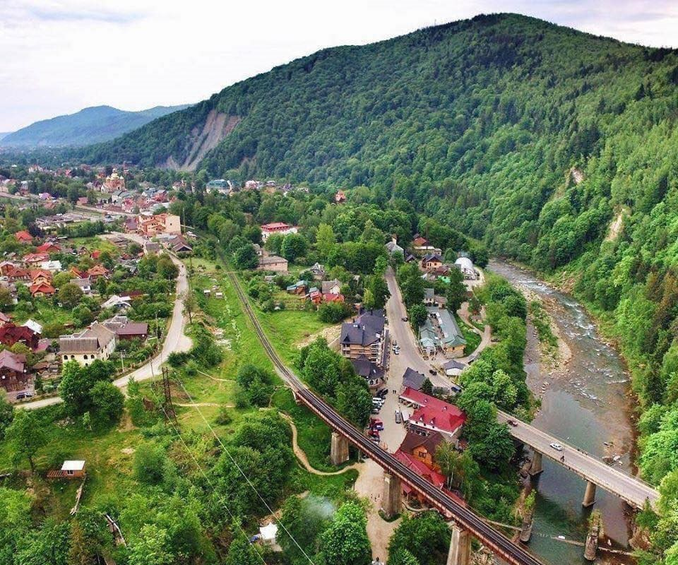

Дата і місце народження: 26 квітня 2007 року, м. Буча.
Освіта: Бучанський ліцей №3;
НТУУ «КПІ ім. Ігоря Сікорського».
Яремче — мальовниче курортне місто в Івано-Франківській області, розташоване в долині річки Прут серед Карпатських гір. Воно славиться своїм знаменитим водоспадом Пробій, неймовірними гірськими краєвидами, чистим смерековим повітрям та автентичним гуцульським колоритом.
